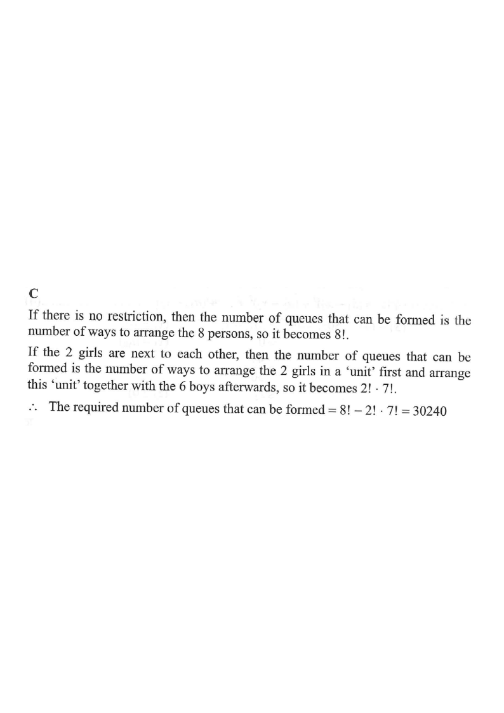

Step 1 — The problem: 6 boys and 2 girls queue up.
HKDSE 2015 · Paper 2 · Q43
14. Probability — Arrangement of a Queue
A queue is formed by $6$ boys and $2$ girls. If no girls are next to each other,
how many different queues can be formed?
A. 1 440
B. 10 080
C. 30 240
D. 35 280

Figure (original exam diagram)
1Step 1 — Understand the setting
There are $8$ people in total: $6$ boys and $2$ girls. We must count the linear
arrangements (queues) of these $8$ people where the two girls are
not adjacent.
Hint: counting the complement (total − bad cases) is usually the fastest route.
2Step 2 — Count all queues with no restriction
Number of Permutations of n Distinct Objects\(n!\)The \(8\) people are all different, so unrestricted queues number \(8!=40\,320\).
Arranging $8$ distinct people in a line in any order gives
\[ 8! = 8\times7\times6\times5\times4\times3\times2\times1 = 40\,320. \]
Hint: $n$ distinct objects in a queue can be ordered in $n!$ ways.
3Step 3 — Count the "bad" queues (girls adjacent)
Treat the $2$ girls as one unit
Multiplication Rule of Counting\(\text{number of ways}=m\times n\)Treating the two girls as one block gives \(7!\) orders times \(2!\) internal swaps.
. That unit together with the $6$ boys makes
$7$ objects, arranged in $7!$ ways. Inside the unit the two girls can swap:
\[ 2! \times 7! = 2 \times 5\,040 = 10\,080. \]
Hint: "tie" the girls together first, then arrange the block among the others.
4Step 4 — Subtract to get the required number
\[ 8! - 2!\cdot 7! = 40\,320 - 10\,080 = 30\,240. \]
This matches option C
Complementary Counting\(N(\text{required})=N(\text{total})-N(\text{complement})\)Subtracting the \(10\,080\) queues with the girls together leaves \(30\,240\).
.
Hint: required = (all arrangements) − (arrangements with girls adjacent).
5Step 5 — Check by the "gap" method
Alternatively, arrange the $6$ boys first ($6!=720$ ways). They create $7$ gaps
(before, between, after):
\[ \_\,B\,\_\,B\,\_\,B\,\_\,B\,\_\,B\,\_\,B\,\_ \]
The $2$ girls must occupy $2$ different gaps: choose ${}^{7}C_{2}$ gap-pairs and
arrange the girls within them in $2!$ ways:
\[ 6! \times {}^{7}C_{2}\times 2! = 720 \times 21 \times 2 = 30\,240. \;\checkmark \]
Hint: the gap method directly enforces "no two girls adjacent".
Answer: C. 30 240
PRACTICESimilar question — try it yourself
Question. A queue is formed by \(5\) boys and \(3\) girls. If no two girls are next to each other, how many different queues can be formed?
Show the worked solution
Step 1. Arrange the \(5\) boys first: \(5!=120\) ways.
Step 2. The boys create \(6\) gaps (before, between and after them), and the \(3\) girls must occupy \(3\) different gaps.
Step 3. Choose the \(3\) gaps and arrange the girls in them: \({}^{6}C_{3}\times3!=20\times6=120\) ways.
Step 4. Multiply the stages: \(120\times120=14\,400\) queues.
Step 5. Check: this is below the unrestricted \(8!=40\,320\) ✓.